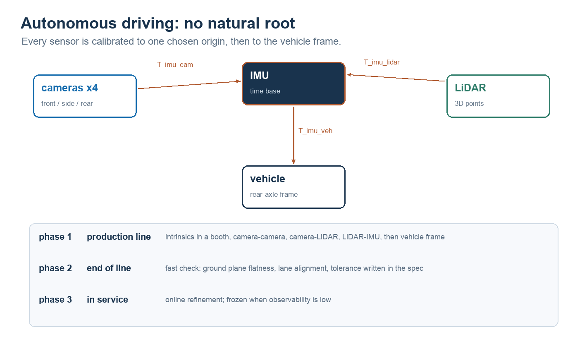

NOTE 16 / 标定 · 系统方法
机器人标定
标定的产出不是一个变换矩阵，而是矩阵加上它的不确定度。没有不确定度的标定，验收时只能凭感觉。
标定事故大多不是算法问题，是把四件不同的事混成了一件。这篇先把它们拆开，再给一条能执行的流程，最后说自动驾驶为什么是另一套。
范围。以视觉与机器人的标定为主，不涉及 IMU 噪声建模、激光内参这类专门话题。文中的数目是经验区间，不同精度要求下差别很大。
1. 先拆成四件事
| 标什么 | 求什么 | 约束从哪来 | 典型失败 |
|---|---|---|---|
| 内参 | 相机自身几何：焦距、主点、畸变 | 标定板的多视角观测 | 板子总在画面中央、姿态太单一 |
| 外参 | 相机相对某个参考系的位姿 | 已知 3D 点，或已知位姿的板子 | 基准没定义、尺度错了 |
| 手眼 | 相机与末端的固定关系 | 机器人位姿 + 视觉观测 | 运动退化、姿态太集中 |
| 时间 | 两路数据的时间偏移 | 硬件触发，或运动中的互相关 | 完全没做，误差比外参还大 |
四件事的数学形式不同，验收方式也不同，但它们在链路里是相乘的。

这个式子值得盯一会儿：
三段里只有中间那段是硬件决定的常数。两边随每次运动变化，中间那段不变——手眼标定要做的，就是从「两端都在变」的观测里，把「不变」的那段解出来。
2. 内参：不是拍几张棋盘格
针孔模型只有四个未知数：fx、fy、cx、cy，加上畸变通常五到八个。
张正友的方法之所以成为标准，是因为它把每张平面标定板变成一个单应矩阵（八个自由度），多张图叠起来约束就足够了，可以先闭式求解再非线性优化。
实操上有三条决定成败：
板子要占满视场。二十张全在画面中央拍，边角的畸变系数根本没被约束。合格的做法是把视场切成 3×3，每个区域至少几张，并且倾斜到正负四十五度左右。
姿态要散。全是正对相机的图，二十张的信息量接近一张。
重投影误差要分区看。全局 RMS 0.2 像素很漂亮，但如果误差全挤在右下角，说明畸变模型在那里拟合不住——要么加阶数，要么相机本身有问题。
还有一个常被忽略的耦合：焦距和「板子离相机多远」在单目里是同一件事的两种解释。所以标定板的尺寸必须准确，否则尺度会整体偏。这也是为什么工业标定单上要写板的加工精度。
3. 外参：先定义基准，再谈精度
外参是「相机相对谁」。这个「谁」必须在动手前写清楚：机器人基座、地面、车体后轴中心。定义不同，同一组数据出来的数字可以差很多。
求解本身不难——有若干 3D 点和它们的像素坐标，PnP 加非线性优化就够。难在两件事。
尺度。单目看不出绝对尺度。要么有已知尺寸的板子，要么有别的传感器给出 3D 点。没有第三个信息源，尺度就是猜的。
传递链。相机和基座之间如果隔着关节，那所谓外参其实依赖当时的关节角——这时它是手眼问题，不是外参问题。这个区分不做，后面所有分析都会错位。
4. AprilTag：好在哪，差在哪
AprilTag 相对棋盘格的优势只有一条，但很关键：它自带 ID。
棋盘格必须知道「第 3 行第 5 列的角点」在板子上是哪个，所以板子不能动、角点要排序。AprilTag 直接告诉你编号，位姿可以单张解出来。
代价是误差特性不一样：
位置误差主要来自尺寸。距离等于尺寸乘焦距再除以像素宽度，板子印大百分之一，距离就错百分之一。所以 tag 的物理尺寸要用卡尺量，不要信包装上的标称值。
倾斜角最不敏感。正对着相机的小 tag，估算「歪了几度」非常弱，因为四个角点的透视变形太小。这是平面目标的固有退化：存在两个位姿解，重投影误差几乎一样。
绕光轴的旋转反而很准，因为角点位置直接给出。
所以工程做法是用多个 tag 组成一块板（AprilTag board 或 ChArUco）：既保留 ID，又用大基线把倾斜角约束住。单个小 tag 适合回答「大致在哪」，不适合回答「精确姿态」。
5. 手眼：AX = XB，以及它为什么会退化
公式本身很好记，难的是理解它什么时候无解。
A 是两次末端位姿之间的相对变换，机器人给；B 是两次相机观测之间的相对变换，视觉给；X 是待求的固定关系。
两条路径必须到同一个地方——这是它唯一的含义。
求解通常先旋转后平移：旋转部分与平移无关，可以独立解出来；有了旋转，平移就是线性的。
而旋转部分的方程，本质是在解一个线性系统，它的可解性取决于这些旋转轴在三维里铺得有多开。下面这个实验把这件事算出来了：拖动「轴散布」，看最弱方向的约束怎么消失。
旋转轴铺得开不开
每组姿态贡献一个旋转向量（轴 × 角）。把它们叠成矩阵 M = Σωωᵀ，三个特征值就是三个方向的约束强度。最弱方向接近零时，旋转方程秩亏。
- 最弱 / 最强方向
- —
- 条件数
- —
—
三种典型退化：
所有运动绕同一根轴。机器人只在一个平面内转，三个方向的约束退化成一个。
只有平移没有旋转。旋转方程完全没约束，此时 X 的旋转部分不可观。
旋转角太小。每组只转几度，噪声盖过信号，解出来的 X 会随数据抖动。
经验做法：十五到二十五组姿态，覆盖两根以上不平行的转轴，角度尽量散到三十度到九十度之间，并且让标定板在画面里出现在不同位置——姿态多样性和空间多样性都要。
6. 时间：最便宜、也最常被跳过的一项
前四项都在空间里，这一项在时间上。
相机的时间戳、机器人关节状态的时间戳，如果不是同一个时钟，两边的数据就永远对不上。而它对精度的影响，往往比外参大。
下面这个实验把误差算出来：一个点绕着半径 r 以角速度 ω 运动，时间戳差 Δt，定位误差是多少。
一个时间戳偏差值多少毫米
目标做圆周运动，误差等于 2r·sin(ωΔt/2)。曲线画的是误差随偏差的变化，橙点是当前取值的落点。
- 定位误差
- —
- 等效转角
- —
—
请注意这个量级：半径 0.4 米、每秒转半圈，仅仅 10 毫秒的偏差就对应十几毫米。这个数量级通常已经超过了外参标定的残差——也就是说，时间没对齐的时候，外参标得再准也没用。
对齐的办法按可靠性从高到低：硬件触发（PPS 秒脉冲、相机触发线）优于网络精密时钟（PTP），优于软件时间戳加事后互相关。软件方案也能用，但必须实测偏移量并写进参数。
7. 一条能执行的流程
每一步后面跟验收判据。没有判据的流程，最后一定会变成「看起来差不多」。
| 阶段 | 做什么 | 通过判据 |
|---|---|---|
| 0 定义 | 定基准、定要标的量、定容差 | 写下来，有人确认 |
| 1 硬件 | 相机锁死、板子刚性、光照均匀无反光 | 静止连拍十张，角点抖动小于 0.2 像素 |
| 2 内参 | 3×3 分区、多姿态，二十到四十张 | 重投影 RMS 小于 0.3 像素，且分区均衡 |
| 3 手眼 | 十五到二十五组，两轴以上 | 残差小于 2 毫米 / 0.5 度，且不随距离放大 |
| 4 外参 | 用未参与标定的点验证 | 独立点残差与标定点同量级 |
| 5 时间 | 硬件触发优先，软件对齐要实测偏移 | 运动中的残差接近静止时的残差 |
| 6 验证 | 做一个物理任务测真误差 | 见下一节 |
| 7 版本化 | 记录日期、温度、工装、参数文件 | 任何人能复现同一组数 |
8. 为什么重投影误差会骗人
这是我最想强调的一点。
重投影误差低，不等于外参对。
因为标定时「外参」和「每张图的板子位姿」是一起优化的。模型完全可以通过调整板子位姿，把外参的偏差吸收掉。你得到的是一个自洽的解，不是一个正确的解。
真正的验证要做物理量：
让机器人在标定空间里走一个已知边长的立方体，测末端实际落点和期望的差；或者固定一个点，从多个姿态去指它，看落点散布；或者留出完全没参与标定的第三个位置做验证。
标定的产出不是一个变换矩阵，是变换矩阵加上它的不确定度。
9. 自动驾驶为什么是另一套
你问的这块和机器人手眼有本质区别，差别在结构上，不在精度上。

一、标定对象是「传感器之间」，不是「相对基座」。相机、激光雷达、毫米波、IMU、轮速，没有一个天然的根。工程上通常选 IMU 或后轴中心作为原点，其余都相对它。
二、约束类型不同，不能直接建方程。相机给 2D 像素，激光给 3D 点，毫米波给距离和多普勒。它们之间只能靠「共同观测到同一个物体」建立联系——这就是标定板在产线标定里始终是主力的原因。
三、多相机要互相约束。环视系统里相邻相机有重叠视场。做法是先用大标定场把所有相机标到车体，再用重叠区做联合优化，避免「各自都准、拼起来错位」。
四、必须做在线标定。装配公差、震动、温度漂移会让外参在几万公里里慢慢变化。所以量产车除了产线标定，还有一层在线自适应：用行驶中的车道线、地面、语义分割结果持续微调。它不是替代产线标定，是补偿之后的漂移。
五、时间同步是硬约束。相机曝光、激光扫描、IMU 采样必须对到同一时钟。工业上要么硬件触发，要么 PTP 精密时钟。软件时间戳在高速下误差几毫秒，二十米每秒就是几十厘米。
还有一点是自动驾驶特有的：退化场景。长直高速、隧道、雨雾、夜间，在线标定所需的约束不足。这时候正确的做法不是继续更新，而是冻结参数——否则约束越弱，参数漂得越远。
10. 回到你这条链路
按你现在的配置（双臂机器人加腕部与头部相机、桌面任务），大概对应成这样：
| 环节 | 要标什么 | 容易踩的 |
|---|---|---|
| 相机内参 | 各路相机的焦距、主点、畸变 | 仿真相机没有畸变，真机有，别用同一套参数 |
| 手眼 | 腕部相机相对末端、头部相机相对基座 | 这是两套，别只标一套 |
| 盘位姿 | 标签到基座 | 标签尺寸误差直接变成距离误差 |
| 时间 | 相机时间戳与关节状态时间戳 | 几十毫秒的偏移就是几度的关节差 |
最后一条单独提醒：如果症状是「静止时很准、一动就偏」，先排除时间戳，再怀疑外参和模型。这个实验很便宜——同一场景静置拍十秒、再慢速移动拍十秒，比较两者的残差。差值大，就是时间。
相关笔记：手眼标定：把「相机看到的」搬进机器人坐标系（AX=XB 的推导） · AprilTag 视觉定位详解（标签怎么变成位姿） · 把 VLA 装进 G2（一个真实的排障记录）